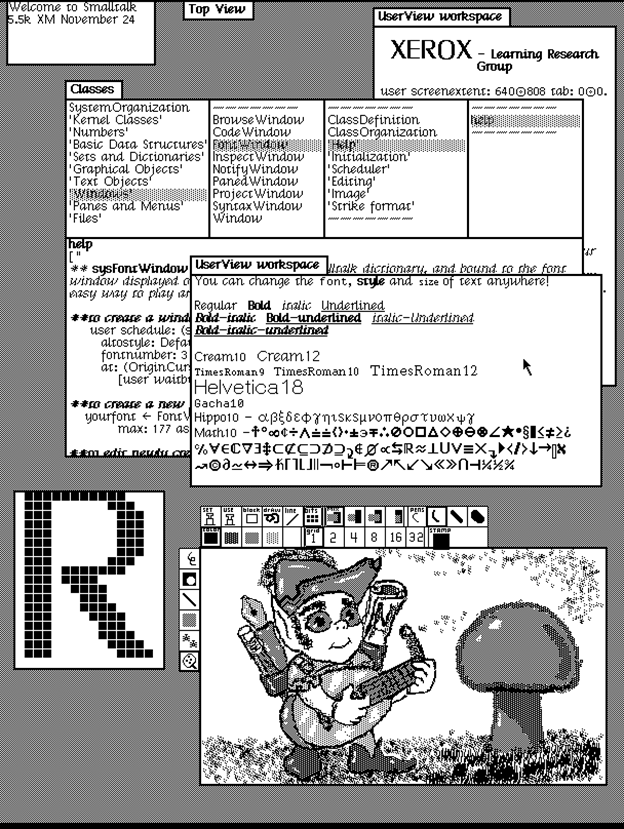
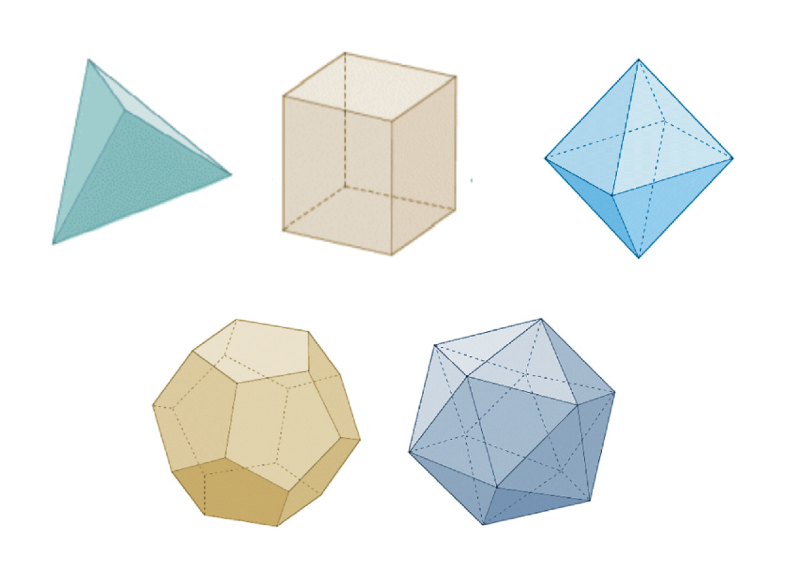
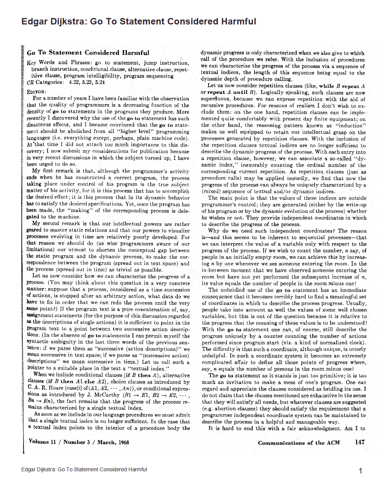
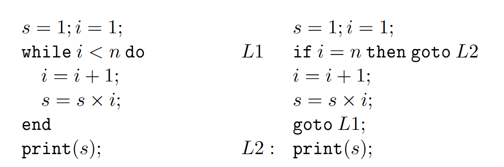
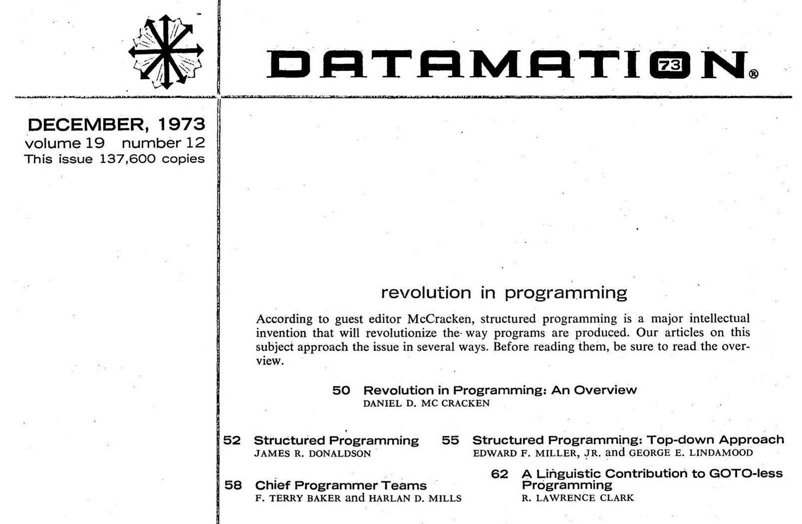

NPRG075
History and philosophy of programming
Tomáš Petříček, 309 (3rd floor)
petricek@d3s.mff.cuni.cz
https://tomasp.net | @tomaspetricek
Lectures: Monday 12:20, S7
https://d3s.mff.cuni.cz/teaching/nprg075

Philosophy of science
Why does it matter?
Philosophy of science
What can we learn about programming?
- What designers assume and never question
- How to understand odd designs of the past
- What is the nature of programming concepts
- What social forces shape programming

What do philosophers do?
Origins, languages, systems, correctness
How could it have
gone differently?
Reflections on ethics, politics, development
What if we took one aspect as primary?
Doing philosophy of programming
Methods
Try to explain
how scientists think and work

Entities
How concepts evolve & what
are they?
Social forces
How social aspects shape technology

Paradigm shifts
Classic philosophy of science
Scientific revolutions
Periods of normal science disrupted by revolutions
New era with new assumptions when the old ways stop working
New incommensurable with the old thinking
Philosophy of science

Research programmes (Lakatos)
- Groups of scientists share assumptions
-
Explain failures by blaming
secondary auxiliary assumptions
Against method (Feyerabend)
- No single rule explains science
- Hard to say what is reasonable!

Programming language revolution
(Gabriel, 2012)
From thinking about programming systems
Running, with evolving state, modified interactively
To thinking about programming languages
Relationships in static code

Smalltalk language
"Smalltalk is an object-oriented, dynamically typed reflective programming language"
What makes it interesting?

Smalltalk as a programming system
Think not about source code, but about evolving system state!

Smalltalk
Programming system view
- Image-based persistence rather than source
- Application ships with developer tools
- Class browser allows inspecting & editing
- Reflection lets the system change itself
LISP language
Functional programming language
derived from the lambda calculus?

LISP environment

Time-sharing
- Batch processing in the 1950s
- TX-0 ('58) allowed interactive use
- Multi-user machines via teletype
AI research requirements
- Programming with symbolic data
- Interactive experimentation
- Programs that improve themselves

LISP editor
(Deutsch, 1967)
Interactive program editing on the terminal
Teletype, not a screen!
Print using: P
Delete child: (3)
Replace child: (2 ..)
Interlisp: Interactive Lisp

PILOT (1966)
- Edit code via list transformations
- Advising to enhance procedures
- Modifying state of a running system
DWIM (1974)
- Interactive program correction
- Suggests automatic fixes when error occurs
- Do What I Mean / Damn Warren's Infernal Machine

Symbolics Lips Machines (1980s)
Machines optimized for LISP with LISP-based environment
Persistent memory with just cons-cells
Response to new hardware architecture
Scientific revolutions
Paradigm shifts in programming
- Understand what people really thought!
- The invention of a programming language
- The shift from systems to languages
- Functional programming "research programme"
Entities
Evolution of programming concepts
How mathematical concepts evolve?
Polyhedra, space, graph, function, convergence, measurable set
How does the definition change and why?

Polyhedra
Euler's formula
\(V-E+F=2\)
A polyhedron is a solid whose surface consists of polygonal faces?
Counter example?

Convex polygons!
Through any point in space there will be at least one plane whose cross-section with the polyhedron will consist of one single polygon.
Monster-barring
I turn aside with a shudder of horror from this
lamentable plague of functions which have no derivatives.
(Charles Hermite, 1893)
Concepts
Proofs and refutations
- Concept definitions are not constant but change
- Arising from proofs, counter-examples, lemmas
- Monster-barring and exception-barring
- Concept stretching when understanding evolves
Concepts in programming

Change over time!
- Data types, logical types
- Monads and "railway" metaphor
- Processes become abstract
Multiple forces for change
- New implementation of the concept
- Different metaphor for thinking
- New formalization in a proof
Evolution of types

Implementation & formal modality
Data types like records, modelled as sets
Implementation modality evolves
Abstract data types for modularity
Type checking ala lambda calculus
Intuitive modality evolves
Well-typed programs do not go wrong
New type systems based on this
Implementation modality evolves
Types for documentation and editor tooling
Understanding Monads

What are monads
- Origins in category theory
- Abstraction in functional programming
- Used for stateful computations
Writing about monads
- Compare how mathematicians and programmers talk about monads!
- tinyurl.com/nprg075-mcat
- tinyurl.com/nprg075-mprog
Evolution of monads

Formal and intuitive modality
Standard construction in algebraic topology Monad as a "box" intuition
Implementation modality appears
Used for sequencing effectful computations
Definition in terms of bind and return
Implementation & intuition evolves
Monads in Haskell and the do notation
Monad as a "sequencing" intuition
Concepts
Programming language design
- There is more to concepts than just a name
- Ideas come from logic, linguistics, biology!
- Beware of concept stretching as with types?
- Capture a new intuition in the design?
Social forces
What shapes programming?

Social history
of computing
How commercial
interests or gender bias shape computing
Redefinition of programming as more masculine software engineering in the 1960s
Structured programming

Goto considered harmful (1968)
The quality of programmers is a decreasing function of the density
of go to statements in the programs they produce.
Problems with goto
- Hard to reason about informally
- Hard to reason about formally
- Code structure does not match runtime behaviour
Structured programming
Not obvious at the time!
- Everyone used to assembly!
- Can the compiler optimize code?
- Is it possible to avoid gotos?
Structured Programming Theorem (1966)
Us converts waved this interesting bit of news under the noses of the unreconstructed assembly-language programmers who kept trotting forth twisty bits of logic and saying, 'I betcha can’t structure this.'

Datamation (1973)
What is structured programming and how to do it in practice
From engineering concept to managerial concept
Chief programmer teams
Top-down management technique
- Structured programming for organizing people
- Chief-programmer leading & dividing code
- Supported by programmers, secretary, backup
- Hostile exchanges between Dijkstra and Mills

Conway's law
Any organization that designs a system will produce a design whose structure is a copy of the organization's communication structure.
Social forces
Programming language design
- Language features linked to social structures
- Organizational structure and escape hatches
- Structured, microservices, information hiding
- Origins of languages - COBOL, Fortran, Algol
Conclusions
History and philosophy

History and philosophy
Learning from the past
Complex reasons why & how programming ideas work and do not work
Reading

10 PRINT CHR$(205.5+RND(1));
20 GOTO 10
- 15: REM Variations in Basic
- https://10print.org (look for the PDF)
Why should you read this?
- Fun look at an unexpected bit of programming history
- What can we learn from the past?
Conclusions
History and philosophy of programming
- Scientific paradigms and paradigm shifts
- The history of programming concepts
- How social forces shape programming
Tomáš Petříček, 309 (3rd floor)
petricek@d3s.mff.cuni.cz
https://tomasp.net | @tomaspetricek
https://d3s.mff.cuni.cz/teaching/nprg075
References (1/2)
Philosophy of science
- Kuhn, T. S., (2012). The Structure of Scientific Revolutions. Chicago
- Feyerabend, P. (1975). Against Method. Verso
- Lakatos, I. (1976). Proofs and Refutations. Cambridge
History & reflections
- De Mol, L., Primiero, G. eds. (2018). Reflections on Programming Systems: Historical and Philosophical Aspects. Springer
- Gabriel, R. (2012). The Structure of a Programming Language Revolution. Onward!
- Petricek, T. (2022). Cultures of Programming. Draft
- Petricek, T. (2018). What we talk about when we talk about monads
References (2/2)
Historical materials
- Teitelman, W. (1966). PILOT: A Step Toward Man-Computer Symbiosis. MIT
- Teitelman, W. (1974). Interlisp Reference Manual. Xerox PARC
- Deutsch, P. (1967). Preliminary Guide to the LISP Editor. Berkeley
- Dijkstra, E. (1968). Go To Statement Considered Harmful. ACM
- McCracken et al. (1973). Revolution in Programming. Datamation 12